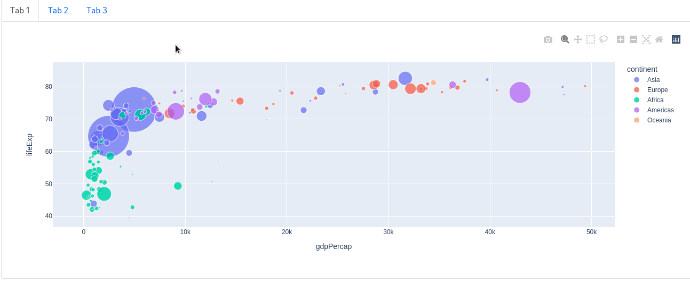

Chapter 11: Additional Components
Contents
Chapter 11: Additional Components¶
What you will learn¶
In this chapter we will introduce several additional components, which are necessary to further customise apps.
Learning Intentions
How to look for additional components
Familiarize with some of the most common additional components
By the end of this chapter you will know how to build this app:

See the code
# Import packages
from dash import Dash, Input, Output, State, html
import dash_core_components as dcc
import dash_bootstrap_components as dbc
import base64
# Initialise the App
app = Dash(__name__, external_stylesheets=[dbc.themes.BOOTSTRAP])
image_filename = 'plotly.png' # replace with your own image
encoded_image = base64.b64encode(open(image_filename, 'rb').read())
img = html.Img(src='data:image/png;base64,{}'.format(encoded_image.decode()))
offcanvas_doc = dcc.Link("Off-Canvas documentation", id='oc_doc', target='_blank',href='https://dash-bootstrap-components.opensource.faculty.ai/docs/components/offcanvas/')
link_doc = dcc.Link("Link documentation", id='link_doc', target='_blank',href='https://dash.plotly.com/dash-core-components/link')
offcanvas_layout = dbc.Container(
[
dbc.Row([dbc.Col(img)]),
dbc.Row([dbc.Col(offcanvas_doc)]),
dbc.Row([dbc.Col(link_doc)]),
]
)
offcanvas = html.Div(
[
dbc.Button("Open Offcanvas", id="open-offcanvas", n_clicks=0),
dbc.Offcanvas(
[offcanvas_layout],
id="offcanvas",
title="Off-Canvas",
is_open=False,
),
]
)
# App Layout
app.layout = dbc.Container(
[
dbc.Row([dbc.Col(offcanvas)])
]
)
@app.callback(
Output("offcanvas", "is_open"),
Input("open-offcanvas", "n_clicks"),
)
def toggle_offcanvas(n1):
if n1:
return True
# Run the App
if __name__ == '__main__':
app.run_server()
11.1 Introducing additional components¶
Dash libraries include a lot of components that serve multiple purposes. It may be a bit overwhelming to navigate through all the components in search for the one that meets your needs. Therefore, in this chapter we will provide an overview of several components that are commonly used and that you may find useful to include in your app.
We will break down the components into categories, grouping together components that serve the same purpose. For each category, we will present some of the most common components in detail.
All components in this chapter come from these libraries:
Dash core components (dcc)
Dash boostrap components (dbc)
11.2 Data Display Components¶
11.2.1 Upload¶
The Upload component allows us to upload a file to the dashboard. For this example we will upload a CSV file and plot the data. Download this CSV file, save it as rotation_angle.csv, run the follwing code, and try uploading the file into the drag and drop section of the app.
Attention
Note that the update_fig() callback function is designed for a specific type of data. Different data wrangling inside the function would be required based on the type of data files you will work with. In this example, the function is built for CSV files exclusively.
from dash import Dash, dcc, html, Input, Output, State
import dash_bootstrap_components as dbc
import pandas as pd
import plotly.graph_objects as go
import base64
import io
from dash.dash import no_update
app = Dash(__name__, external_stylesheets=[dbc.themes.BOOTSTRAP])
upload = dcc.Upload(
id='upload-data',
children=html.Div([
'Drag & Drop or Click to Select CSV file'
]),
style={
'width': '100%',
'height': '10%',
'lineHeight': '60px',
'borderStyle': 'dashed',
'textAlign': 'center',
}
)
graph = dcc.Graph(id='graph1')
# App Layout
app.layout = dbc.Container(
[
dbc.Row(dbc.Col(upload)),
dbc.Row(dbc.Col(graph))
]
)
@app.callback(Output('graph1', 'figure'),
Input('upload-data', 'contents'))
def update_fig(contents):
if contents is not None:
content_type, content_data = contents.split(',')
# Check if data is CSV
if 'csv' in content_type:
decoded_data = base64.b64decode(content_data)
df = pd.read_csv(io.StringIO(decoded_data.decode('utf-8')))
fig = go.Figure()
# Go through each column in the dataframe and make a trace for it
for col in df.columns:
fig.add_trace(go.Scattergl(y=df[col], mode='lines+markers', name=col))
return fig
return no_update
# Launch the app server
if __name__ == '__main__':
app.run_server()
11.2.2 Card¶
The Card component provides a container in which we can place content neatly such as: titles, main body text, images, buttons, and links. It often leads to a more appealing layout design.
from dash import Dash, html
import dash_bootstrap_components as dbc
app = Dash(__name__, external_stylesheets=[dbc.themes.BOOTSTRAP])
card = dbc.Card(
[
dbc.CardBody(
[
html.H4("Card title", className="card-title"),
html.P(
"Some quick example text to build on the card title and make up the bulk of the card's content.",
className="card-text",
)
]
),
],
style={"width": "18rem"},
)
# App Layout
app.layout = dbc.Container(
[
dbc.Row(dbc.Col(card)),
]
)
# Launch the app server
if __name__ == '__main__':
app.run_server()
Shane, Gab can you please add a few more examples of how a Card can be used or more explanations. This section has very little content compared to other sections.¶
This Dash Bootstrap Components page has additional Card examples.
11.3 Feedback Components¶
11.3.1 Modal¶
Modals are pop-up boxes that allow for user notification, input, or other content to be displayed. It is often incorporated to draw the user’s attention to a specific section of the page. In the example below, the body of the modal solely contains text. However, the modal bobdy can contain many others elements within its children: dropdowns, graphs, input fields, images, links, etc.
from dash import Dash, Input, Output, State, html
import dash_bootstrap_components as dbc
app = Dash(__name__, external_stylesheets=[dbc.themes.BOOTSTRAP])
open_button = dbc.Button("Open", id="open_modal")
close_button = dbc.Button("Close", id="close_modal")
modal = dbc.Modal(
[
dbc.ModalHeader(dbc.ModalTitle("Title")),
dbc.ModalBody("This is the content of the modal"),
dbc.ModalFooter(close_button),
],
id="modal",
is_open=False,
)
# App Layout
app.layout = dbc.Container(
[
dbc.Row(dbc.Col(open_button)),
dbc.Row(dbc.Col(modal)),
]
)
@app.callback(
Output("modal", "is_open"),
[Input("open_modal", "n_clicks"), Input("close_modal", "n_clicks")],
[State("modal", "is_open")],
)
def toggle_modal(n1, n2, is_open):
if n1 or n2:
return not is_open
return is_open
# Launch the app server
if __name__ == '__main__':
app.run_server()
This Dash Bootstrap Components page has additional Modal examples.
11.3.2 Alert¶
Alerts are boxes that provide messages depending on the user interaction with the app.
Using the callback, you can update many of the component’s properties such as: color, fading animation, duration of appearence.
In the example below, an alert pops up if the user chooses a quantity over 100.
# Import packages
from dash import Dash, dcc, html, Input, Output
import dash_bootstrap_components as dbc
# Initialise the App
app = Dash(__name__, external_stylesheets=[dbc.themes.BOOTSTRAP])
# App Layout
app.layout = dbc.Container(
[
dbc.Row([
dbc.Col([
html.Label("Select the number of computers to purchase:"),
dcc.Dropdown([10, 44, 103], value=10, id='my-dropdown')
], width=4),
dbc.Col([
html.Div(id='content')
], width=6)
])
]
)
@app.callback(
Output("content", "children"),
Input("my-dropdown", "value"),
)
def toggle_offcanvas(value):
if value < 100:
return f"You have selected to purcase {value} computers."
if value > 100:
return dbc.Alert(children="We don't have so many computers in stock. Please select fewer computers",
color="danger")
# Run the App
if __name__ == '__main__':
app.run_server()
Let’s see a more sophisticated example. Below, we have created alerts depending on the GTP Per Capita of a selected country and year, compared to the global average:
If the country’s GTP Per Capita is greater than the world’s average, the alert message will have a green background
If the value is the same as the world’s average, the alert message will turn yellow
Otherwise the message will become red
from dash import Dash, dcc, Input, Output, html
import dash_bootstrap_components as dbc
import plotly.graph_objects as go
import pandas as pd
import plotly.express as px
import numpy as np
# Import data
df = px.data.gapminder()
# Initialise the App
app = Dash(__name__, external_stylesheets=[dbc.themes.BOOTSTRAP])
# Create app components
_header = html.H1(children='Alerts by GDP Per Capita', style = {'textAlign' : 'center'})
_text1 = html.P(children='The below alert will adapt depending on GDP for the selected country and year compared to the world\'s average', style = {'textAlign' : 'center'})
year_sel = dcc.Dropdown(id='year-dropdown', placeholder = 'Select a year', options= [c for c in df.year.unique()])
country_sel = dcc.Dropdown(id='country-dropdown', placeholder = 'Select a country', options = [c for c in df.country.unique()])
alert_msg = dbc.Alert(id='alert-gdp', children="Select some year and country to display info", color="info")
# App Layout
app.layout = dbc.Container(
[
dbc.Row([dbc.Col([_header], width=8)]),
dbc.Row([dbc.Col([_text1], width=8)]),
dbc.Row([dbc.Col([dcc.Graph(id='gdpc-line')], width=8)]),
dbc.Row([
dbc.Col([year_sel], width=4),
dbc.Col([country_sel], width=4)
]),
dbc.Row([dbc.Col([alert_msg], width=8)])
]
)
# Configure callback
@app.callback(
Output("alert-gdp", "color"),
Output("alert-gdp", "children"),
Input("year-dropdown", "value"),
Input("country-dropdown", "value"),
prevent_initial_call=True
)
def update_alert(y, c):
gdp_sel = df.loc[(df['country']==c) & (df['year']==y), 'gdpPercap'] #Filter for selection
gdp_avg = df.loc[(df['year']==y), 'gdpPercap'] #Calculate world avg for the same yeara
if (gdp_sel.values.size > 0) & (gdp_avg.values.size > 0):
gdp_sel_v = round(gdp_sel.values[0],2)
gdp_avg_v = round(np.mean(gdp_avg.values),2)
new_children = ['The GDP per Capita in '+c+' in '+str(y)+' was: '+gdp_sel_v.astype(str)+
'; The world average was: '+gdp_avg_v.astype(str)]
if gdp_sel_v == gdp_avg_v:
new_color = 'warning'
elif gdp_sel_v < gdp_avg_v:
new_color = 'danger'
else:
new_color = 'success'
else:
new_color = "dark"
new_children = 'Insufficient Data. Try new selection'
return new_color, new_children
@app.callback(
Output("gdpc-line", "figure"),
Input("country-dropdown", "value"),
prevent_initial_call=True
)
def update_graph(country_sel):
fig = px.line()
if country_sel is not None:
df_plot = df.loc[(df['country']==country_sel), :]
df_avg = df.groupby(['year']).agg({'gdpPercap':'mean'}).reset_index()
fig = px.line(df_plot, x='year', y='gdpPercap', color='country', template='plotly_white')
fig.add_trace(go.Scatter(x=df_avg['year'], y=df_avg['gdpPercap'], line = {'color':'firebrick', 'width':4, 'dash':'dot'}, name = 'Wold Average'))
return fig
# Run the App
if __name__ == '__main__':
app.run_server()

See additional properties and examples of the Alert component.
11.4 Filtering & Input Components¶
11.4.1 DatePicker¶
The DatePicker components allow the user to select a single date or a date range. There are two types of date pickers, both are part of the Dash Core Components library:
DatePickerSingleconsists of one single date selection: by clicking on the object a calendar will pop-up, allowing the user to pick a dateDatePickerRangeis similar to the previous component, but includes two date selections, which should be read as “start” and “end” dates.
The two components have very similar properties - the main ones are:
min_date_allowed : minimum date the user can choose from
max_date_allowed : maximum date the user can choose from
start_date : default start date, when app page initially loads
end_date : default end date, when app page initially loads
In the following app, a DatePickerRange is used as a filter for a line chart. Based on the user selection, a dataframe will be filtered inside the callback function and the chart will be updated.
Note
In the following app, instead of using the gapminder dataset, we have used a dataset based on stock prices, as it includes a full date field.
# Import packages
from dash import Dash, dcc, Input, Output, html
import dash_bootstrap_components as dbc
import pandas as pd
from datetime import date
import plotly.express as px
# Import data
df = px.data.stocks()
df['date'] = pd.to_datetime(df['date'], format='%Y-%m-%d')
# Initialise the App
app = Dash(__name__, external_stylesheets=[dbc.themes.BOOTSTRAP])
# Create app components
date_range = dcc.DatePickerRange(id='date-range',
start_date_placeholder_text='start date',
end_date_placeholder_text='end date',
min_date_allowed=df.date.min(),
max_date_allowed=df.date.max(),
display_format='DD-MMM-YYYY',
first_day_of_week = 1)
# App Layout
app.layout = dbc.Container(
[
dbc.Row([dbc.Col([date_range], width=8)]),
dbc.Row(dbc.Col([dcc.Graph(id='stock-line')], width=8))
]
)
# Configure callback
@app.callback(
Output(component_id='stock-line', component_property='figure'),
Input(component_id='date-range', component_property='start_date'),
Input(component_id='date-range', component_property='end_date')
)
def plot_dt(start_date, end_date):
df_plot = df
if start_date is not None:
df_plot = df_plot.loc[(df_plot['date']>=start_date), :]
if end_date is not None:
df_plot = df_plot.loc[(df_plot['date']<=end_date), :]
fig = px.line(df_plot, x='date', y=['GOOG','AAPL','AMZN','FB','NFLX','MSFT'], template='plotly_white')
return fig
# Run the App
if __name__ == '__main__':
app.run_server()
See additional properties and examples of the DatePickerRange component.
11.4.2 Store¶
Store component allows to use the browser memory in order to store app data. A typical use case for this component is to store data in memory and use it in a different tab.
When using this component, it is important to pay attention to the following:
this component can only store data in the following formats: json, list, dictionary data types. With the
dataproperty, we can access to the content stored in the memory.how long the data is going to be stored is a customizable property called
storage_type. We can use three different types of memory, which are cleared by three different events.memory: the data will be cleared when we refresh the browser page;session: the data will be cleared when we close the browser;local: the data will be cleared when we clean the browser cookies.this is an invisible component: although it won’t affect app layout, the component must be included in the
app.layoutin order to work properly.it’s generally safe to store up to 2MB in most environments, and 5~10MB in most desktop-only applications.
In the following example, a dropdown selection is stored in memory. We’ve generated three different store components, one for each storage type. This should clarify the difference among the three memory tupes. In the app, the three graphs will plot life expectancy for the countries that are in the corresponding memory.
Try to run the app on your computer. Then, test the storage types by refreshing the page, then closing the browser and reopening it, and then clearing cookies.
# Import packages
from dash import Dash, dcc, Input, Output, html
from dash.exceptions import PreventUpdate
import dash_bootstrap_components as dbc
import plotly.express as px
import pandas as pd
# Import data
df = px.data.gapminder()
# Initialise the App
app = Dash(__name__, external_stylesheets=[dbc.themes.BOOTSTRAP])
# Create app components
_header = html.H1(children='Store App', style = {'textAlign' : 'center'})
_text1 = html.P(children='The selected countries below will be stored in memory', style = {'textAlign' : 'center'})
country_sel = dcc.Dropdown(id='country-dropdown', placeholder = 'Select countries', options = [c for c in df.country.unique()], multi=True)
mstorage = dcc.Store(id='memory', data=[], storage_type='memory')
sstorage = dcc.Store(id='session', data=[], storage_type='session')
lstorage = dcc.Store(id='local', data=[], storage_type='local')
_subheader41 = html.H4(children='Memory Store based chart', style = {'textAlign' : 'center'})
_subheader42 = html.H4(children='Session Store based chart', style = {'textAlign' : 'center'})
_subheader43 = html.H4(children='Local Store based chart', style = {'textAlign' : 'center'})
_subheader51 = html.H5(children='Memory Store content:', style = {'textAlign' : 'center'})
_subheader52 = html.H5(children='Session Store content:', style = {'textAlign' : 'center'})
_subheader53 = html.H5(children='Local Store content:', style = {'textAlign' : 'center'})
# App Layout
app.layout = dbc.Container(
[
dbc.Row([dbc.Col([_header], width=12)]),
dbc.Row([dbc.Col([_text1], width=12)]),
dbc.Row([dbc.Col([country_sel], width=12)]),
dbc.Row([
dbc.Col([_subheader41], width=4), dbc.Col([_subheader42], width=4), dbc.Col([_subheader43], width=4)
]),
dbc.Row([
dbc.Col([dcc.Graph(id='memory-life-exp-line')], width=4),
dbc.Col([dcc.Graph(id='session-life-exp-line')], width=4),
dbc.Col([dcc.Graph(id='local-life-exp-line')], width=4)
]),
dbc.Row([
dbc.Col([_subheader51], width=2),
dbc.Col([html.P(id='memory-output',)], width=2),
dbc.Col([_subheader52], width=2),
dbc.Col([html.P(id='session-output',)], width=2),
dbc.Col([_subheader53], width=2),
dbc.Col([html.P(id='local-output',)], width=2)
]),
mstorage, lstorage, sstorage
]
)
# Configure callbacks
## Generate callbacks, one per memory type
for store_type in ['memory', 'session', 'local']:
chart_type = store_type+"-life-exp-line"
output_type = store_type+"-output"
# Write in memory
@app.callback(Output(store_type, "data"),
Input("country-dropdown", "value"),
Input(store_type, "data"))
def write_memo(new_sel, memo):
if new_sel is None:
raise PreventUpdate # We avoid update the store if there is no selection or if a different memory was selected
else:
for c in new_sel:
if c not in memo:
memo.append(c)
return memo
## Update graphs
@app.callback(Output(chart_type, 'figure'),
Input(store_type, 'data'))
def plot_gen(memory_sel):
fig = px.line()
if memory_sel is not None:
df_plot = df.loc[(df['country'].isin(memory_sel)), :]
fig = px.line(df_plot, x='year', y='lifeExp', color='country', template='plotly_white')
return fig
## Output memory content
@app.callback(Output(output_type, "children"),
Input(store_type, "data"))
def print_memo(current_memory):
if current_memory is None:
output = ""
else:
output = ", ".join(current_memory)
return output
# Run the App
if __name__ == '__main__':
app.run_server(port=8055)
Here is a simple example of how to use dcc.Store in your app. In this example, we store the gapminder data session chosen in one tab to use it in another tab:
Shane, Gab can you please add a simple app example with tab and Store, or any other example that you think would be simple and helpful for the student to understand how to use store in their code.¶
# Import packages
from dash import Dash, dcc, Input, Output, html, dash_table
from dash.exceptions import PreventUpdate
import dash_bootstrap_components as dbc
import plotly.express as px
import pandas as pd
# Initialise the App
app = Dash(__name__, external_stylesheets=[dbc.themes.BOOTSTRAP])
# App Layout
app.layout = html.Div([
html.H1('Store App with Data', style = {'textAlign' : 'center'}),
dcc.Store(id='memo', data=[], storage_type='session'),
dcc.Tabs(id='store-example-data', value='tab-1-data-input', children=[
dcc.Tab(label='Tab One', value='tab-1-data-input'),
dcc.Tab(label='Tab Two', value='tab-2-data-store'),
]),
html.Div(id='tabs-content')
])
# Configure Callback
@app.callback(Output('tabs-content', 'children'),
Input('store-example-data', 'value'))
def render_content(tab):
if tab == 'tab-1-data-input':
df = px.data.gapminder() # Data imported in tab 1
return html.Div([
html.H3('Select gapminder data to store in memory'),
dcc.Dropdown(id='country-dropdown', placeholder = 'Select a country', options = [c for c in df.country.unique()])
])
elif tab == 'tab-2-data-store':
return html.Div([
html.H3('Selected data from previous Tab'),
html.Div(id='data-table')
])
@app.callback(Output('memo', 'data'),
Input('country-dropdown', 'value'))
def sel_records(c): # Write in memory
if c is None:
raise PreventUpdate
else:
df = px.data.gapminder() # Data imported in tab 1
recs = df.loc[(df['country']==c), :]
return recs.to_dict('records')
@app.callback(Output('data-table', 'children'),
Input('memo', 'data'))
def show_records(data_): # Read from memory
data_df = pd.DataFrame(data_)
my_table = dash_table.DataTable(
columns=[{"name": i, "id": i} for i in data_df.columns],
data=data_df.to_dict('records')
)
return my_table
if __name__ == '__main__':
app.run_server()
See additional properties and examples of the Store component.
11.4.3 Interval¶
Interval enables automatic recurrent updates of the app, by triggering callbacks periodically.
One example where this component is typically used is when the app is connected to an API to download data that is repeatedly updated (e.g. stock market data). By adjusting property, it is possible to configure the following:
intervalis a property that determines the refresh rate. This is measured in milliseconds and every time this interval expires, a counter is increased.max_intervalscan be configured to set a cap to the number of times the refresh happens. By default, this property is set to -1, meaning that refreshes will never stop.n_intervalsrepresent the counter, i.e. the number of times the interval has passed. This property is used to trigger the callback function.
This is an invisible component: although it won’t affect app layout, the component must be included in the app.layout in order to work properly.
In the following example, the current time in New York is refreshed every 2 seconds.
# Import packages
from dash import Dash, dcc, Input, Output, html
import dash_bootstrap_components as dbc
from dash.exceptions import PreventUpdate
from datetime import datetime
import pytz
app = Dash(__name__, external_stylesheets=[dbc.themes.BOOTSTRAP])
_header1 = html.H1(children='Current Time', style={'textAlign': 'center'})
_header4 = html.H4(
children='The New York time below is refreshed whenever the interval component triggers the callback.',
style={'textAlign': 'center'})
_p = html.P(children='', id='livet',
style={'textAlign': 'center', 'font-family': 'Courier New',
'font-size': '250%'})
_interval = dcc.Interval(id='int1', disabled=False, interval=2000)
# App Layout
app.layout = dbc.Container(
[
_interval,
dbc.Row([dbc.Col([_header1], width=12)]),
dbc.Row([dbc.Col([_header4], width=12)]),
dbc.Row([dbc.Col([_p], width=12)])
]
)
# Configure callback
@app.callback(
Output("livet", "children"),
Input("int1", "n_intervals")
)
def refresh_time(i):
if i == 0:
raise PreventUpdate # Condition to stop the interval to refresh
else:
tz = pytz.timezone('America/New_York')
now = datetime.now(tz).strftime('%Y-%m-%d %H:%M:%S.%f')[:-3]
return now
# Launch the app server
if __name__ == '__main__':
app.run_server()
11.5 Navigation Components¶
11.5.1 Tabs¶
Tabs allow for easy navigation between different sections of an app. It is often used when you have a lot of information on one single page and you would like to improve user expriece by dividing the information into separate sections, each within a separate tab.
The dcc.Tabs and dcc.Tab components can be used to create tabbed sections in your app. The dcc.Tab component controls the style and value of the individual tab and the dcc.Tabs component hold a collection of dcc.Tab components.
In the example below, the content for each tab is housed within the children of a dbc.Card.
from dash import Dash, html, dcc
import dash_bootstrap_components as dbc
import plotly.express as px
app = Dash(__name__, external_stylesheets=[dbc.themes.BOOTSTRAP])
df = px.data.gapminder()
df_2007 = df[df.year ==2007]
fig1 = px.scatter(df_2007, x='gdpPercap', y='lifeExp', color='continent', size='pop', size_max=60)
graph1 = dcc.Graph(id='figure1', figure=fig1)
fig2 = px.scatter(df, x='gdpPercap', y='lifeExp', color='continent', size='pop', size_max=40,
hover_name='country', log_x=True, animation_frame='year',
animation_group='country', range_x=[100, 100000], range_y=[25,90])
graph2 = dcc.Graph(id='figure2', figure=fig2)
fig3 = px.choropleth(df, locations='iso_alpha', color='lifeExp', hover_name='country',
animation_frame='year', color_continuous_scale=px.colors.sequential.Plasma, projection='natural earth')
graph3 = dcc.Graph(id='figure3', figure=fig3)
tab1_content = dbc.Card(
dbc.CardBody(
[
graph1
]
),
)
tab2_content = dbc.Card(
dbc.CardBody(
[
graph2
]
),
)
tab3_content = dbc.Card(
dbc.CardBody(
[
graph3
]
),
)
tabs = dbc.Tabs(
[
dbc.Tab(tab1_content, label="Tab 1"),
dbc.Tab(tab2_content, label="Tab 2"),
dbc.Tab(tab3_content, label="Tab 3"),
]
)
# App Layout
app.layout = dbc.Container(
[
dbc.Row(dbc.Col([tabs])),
]
)
# Launch the app server
if __name__ == '__main__':
app.run_server(debug=True)

Although the above is a nice and short app, housing the content of each tab in the children of a dbc.Card or an html.Div has a drawback. It requires that you compute the children property for each individual tab upfront and send all of the tab’s content over the network at once, which could slow the up down.
Another way to display the content of tabs is through the callback method, which allows you to compute the tab’s content on the fly, when the tab is clicked. Here’s an example.
from dash import Dash, dcc, html, Input, Output
external_stylesheets = ['https://codepen.io/chriddyp/pen/bWLwgP.css']
app = Dash(__name__, external_stylesheets=external_stylesheets)
app.layout = html.Div([
html.H1('Dash Tabs component demo'),
dcc.Tabs(id="tabs-example-graph", value='tab-1-example-graph', children=[
dcc.Tab(label='Tab One', value='tab-1-example-graph'),
dcc.Tab(label='Tab Two', value='tab-2-example-graph'),
]),
html.Div(id='tabs-content-example-graph')
])
@app.callback(Output('tabs-content-example-graph', 'children'),
Input('tabs-example-graph', 'value'))
def render_content(tab):
if tab == 'tab-1-example-graph':
return html.Div([
html.H3('Tab content 1'),
dcc.Graph(
figure={
'data': [{
'x': [1, 2, 3],
'y': [3, 1, 2],
'type': 'bar'
}]
}
)
])
elif tab == 'tab-2-example-graph':
return html.Div([
html.H3('Tab content 2'),
dcc.Graph(
id='graph-2-tabs-dcc',
figure={
'data': [{
'x': [1, 2, 3],
'y': [5, 10, 6],
'type': 'bar'
}]
}
)
])
if __name__ == '__main__':
app.run_server(debug=True)
11.5.2 OffCanvas (code example not working)¶
FileNotFoundError: [Errno 2] No such file or directory: ‘plotly.png’¶
The Offcanvas component allows us to display a sidebar overlay on the app.
# Import packages
from dash import Dash, Input, Output, State, html
import dash_core_components as dcc
import dash_bootstrap_components as dbc
import base64
# Initialise the App
app = Dash(__name__, external_stylesheets=[dbc.themes.BOOTSTRAP])
image_file = 'https://raw.githubusercontent.com/open-resources/dash_curriculum/main/tutorial/part3/ch11_files/img/plotly.png'
img = html.Img(src=image_file,width=300)
offcanvas_doc = dcc.Link("Off-Canvas documentation", id='oc_doc', target='_blank',href='https://dash-bootstrap-components.opensource.faculty.ai/docs/components/offcanvas/')
link_doc = dcc.Link("Link documentation", id='link_doc', target='_blank',href='https://dash.plotly.com/dash-core-components/link')
offcanvas_layout = dbc.Container(
[
dbc.Row([dbc.Col(img)]),
dbc.Row([dbc.Col(offcanvas_doc)]),
dbc.Row([dbc.Col(link_doc)]),
]
)
offcanvas = html.Div(
[
dbc.Button("Open Offcanvas", id="open-offcanvas", n_clicks=0),
dbc.Offcanvas(
[offcanvas_layout],
id="offcanvas",
title="Off-Canvas",
is_open=False,
),
]
)
# App Layout
app.layout = dbc.Container(
[
dbc.Row([dbc.Col(offcanvas)])
]
)
@app.callback(
Output("offcanvas", "is_open"),
Input("open-offcanvas", "n_clicks"),
)
def toggle_offcanvas(n1):
if n1:
return True
# Run the App
if __name__ == '__main__':
app.run_server()
See additional examples and properties of the Offcanvas component.
Summary¶
In this chapter, we have gone through several components that can add functionalities to your app. There are additional components and examples that can be found in the Dash Documentation. In addition, there are third-party libraries that have nice components such as Dash Mantine Components; however, these are not maintained by Dash.
This is the end of the section on Advanced Dash. In the next part, we will focus on polishing our Dash app through enhanced styling and improved app performance.